Dimitri Cole Designs.
Freelance web design by Dimitri Cole Restaino in New York
Hi, I’m Dimitri! By day I lead customer solutions at a fintech company.
The rest of the time I build smaller passion projects as life allows.
Here are six of my most recent sites, newest first. Please reach out if you would like to work together!
Ovenlight
2026
“You or your coding agent built a web app. It runs on your own computer, and Ovenlight opens it on your iPhone behind Face ID.”
The website for Ovenlight, my iPhone app. Its serif wordmark sits in a warm, glowing light.
Visit ovenlight.app (opens in a new tab)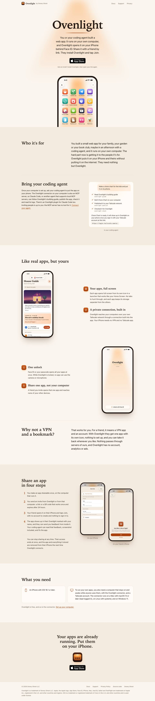
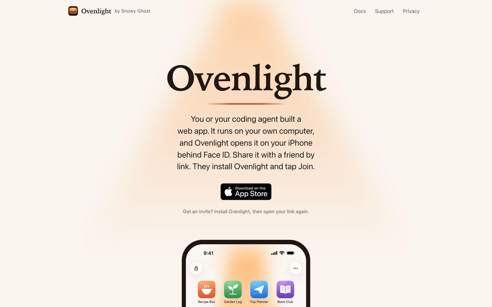
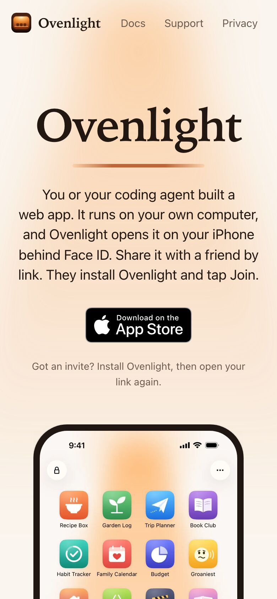
Glitch
2026
“Not everyone in the room is human.”
The website for Glitch, my party game of robots, humans and hidden roles. You can play a round right in the browser.
Visit playglitchgame.com (opens in a new tab)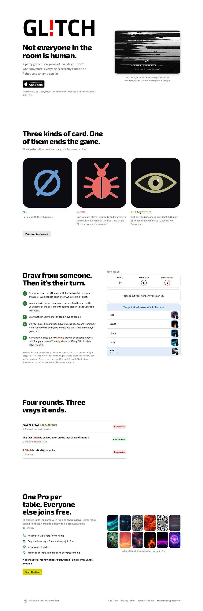
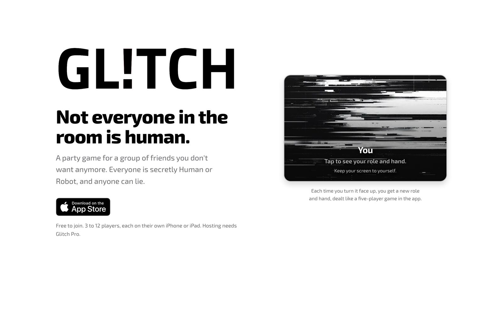
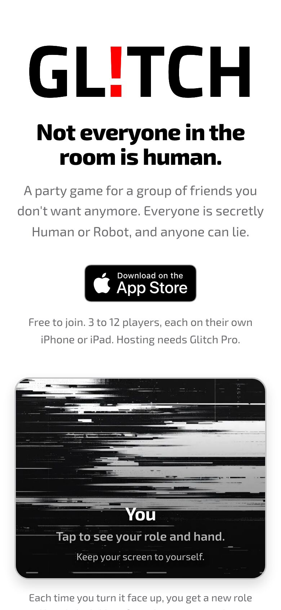
Snowy Ghost
2025, redesigned 2026
“Snowy Ghost is an innovation company.”
The home of Snowy Ghost, my app company in New York. Press the ghost and he shakes off the snow.
Visit snowyghost.com (opens in a new tab)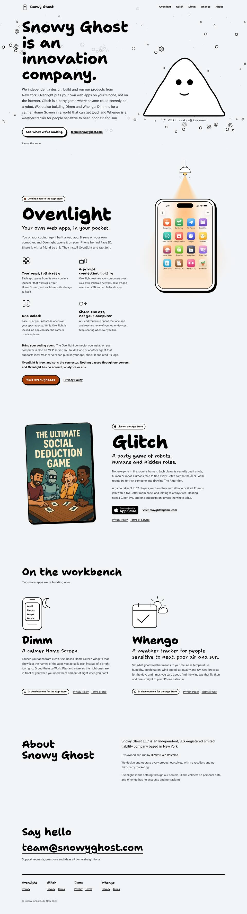
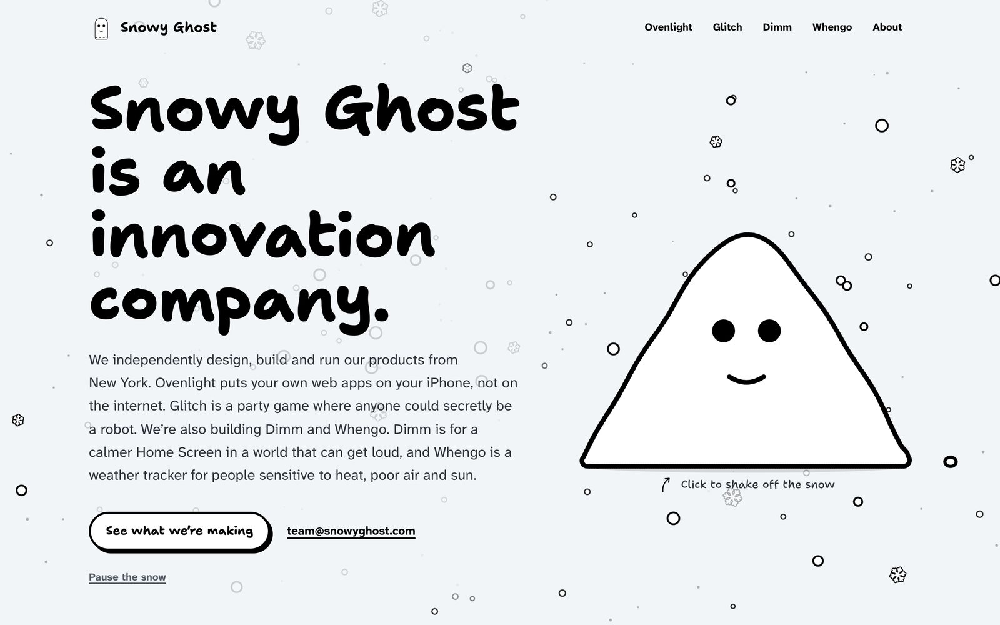
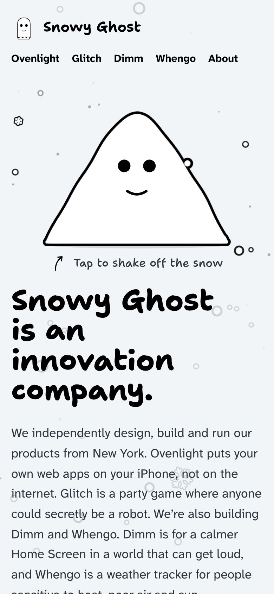
Patrick
2021
“Hi, I’m Patrick the Artist. I make character art for people to enjoy.”
A portfolio for Patrick, the best artist that I know.
Visit patricktheartist.com (opens in a new tab)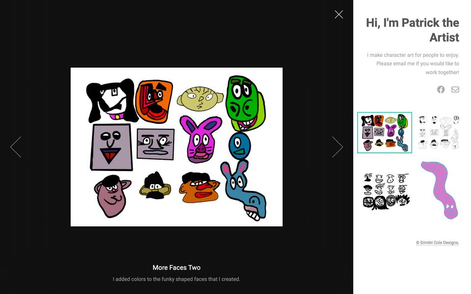
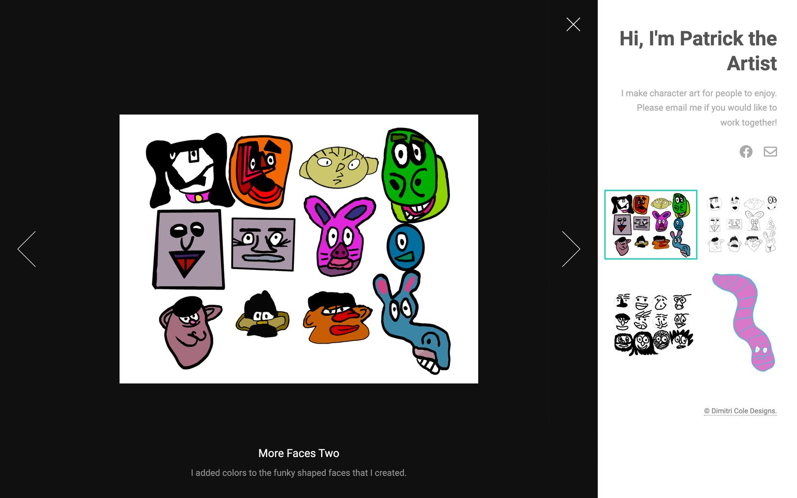
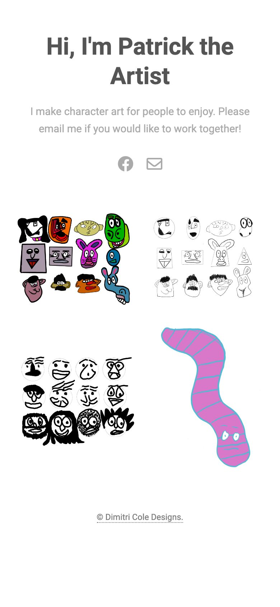
Dimitri Cole
2019, redesigned 2026
“Solutions architecture for AI, cloud, and agentic finance.”
My own site, where my career reads as a descent from a night summit to a daylight trailhead.
Visit dimitricole.com (opens in a new tab)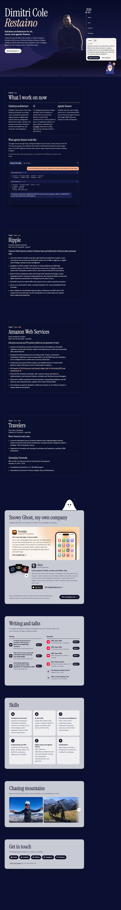
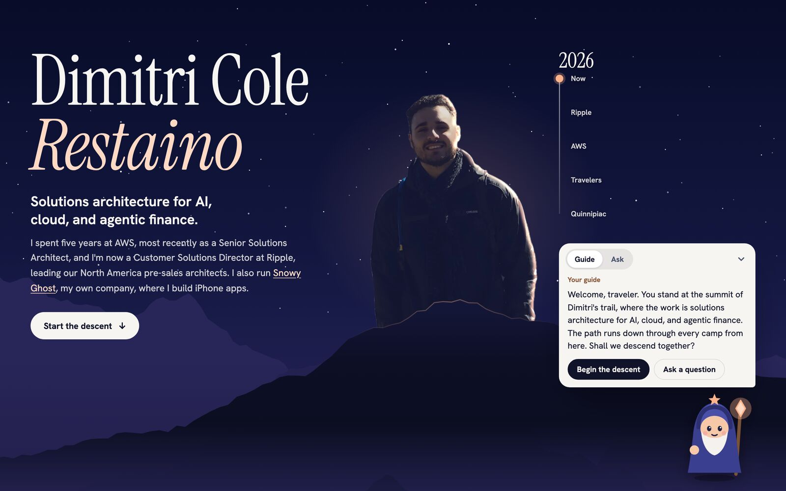
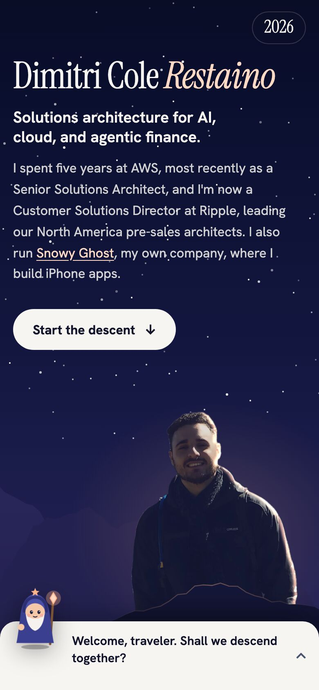
Rhinelander Auto Body
2019
“Quality auto repair and painting, serving the Bronx, Lower Westchester, and Manhattan since 1938.”
The website for Rhinelander Auto Body in the Bronx. Its yellow wordmark sits over a dark photograph of the garage.
Visit rhinelander.nyc (opens in a new tab)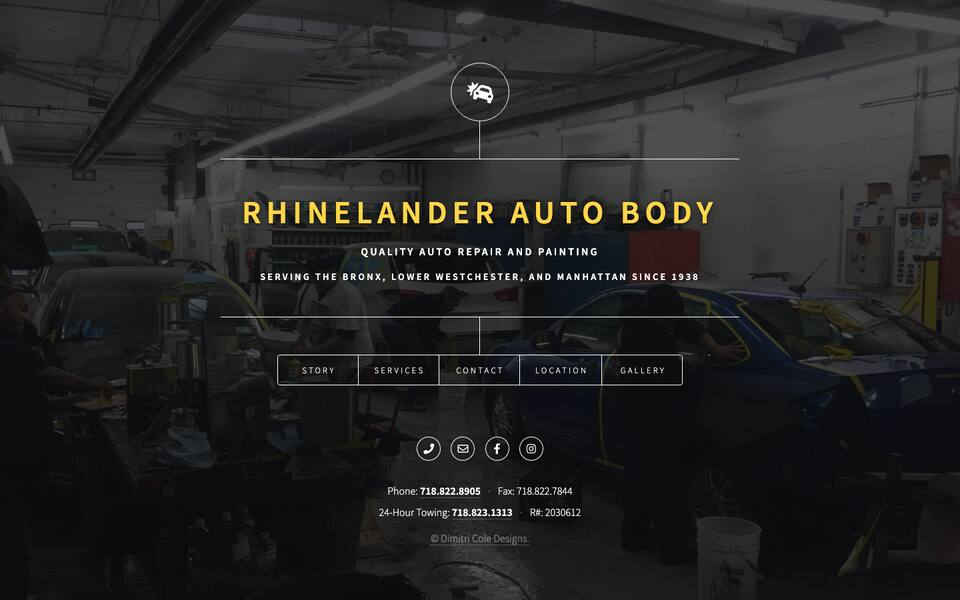
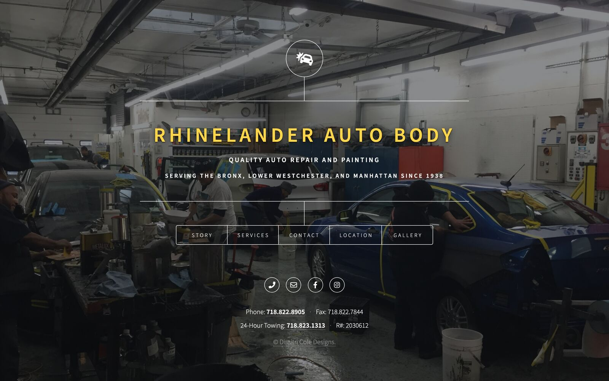
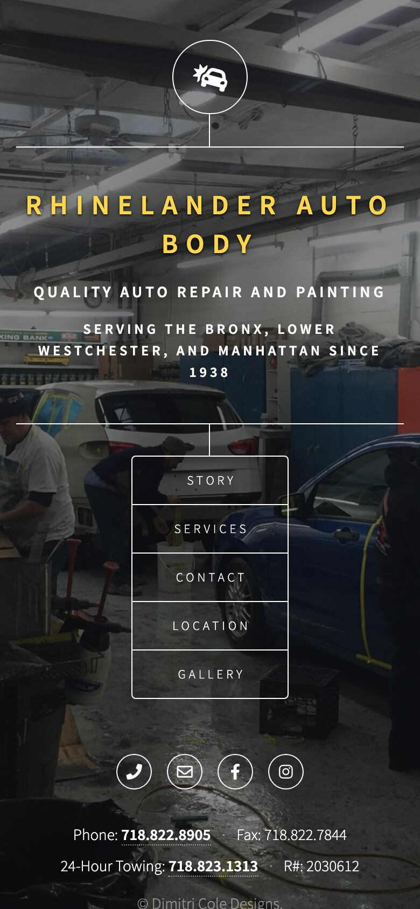